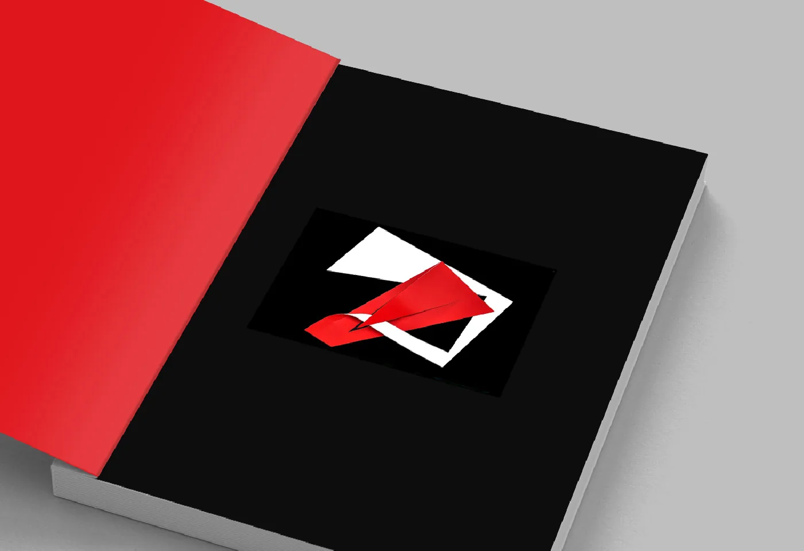
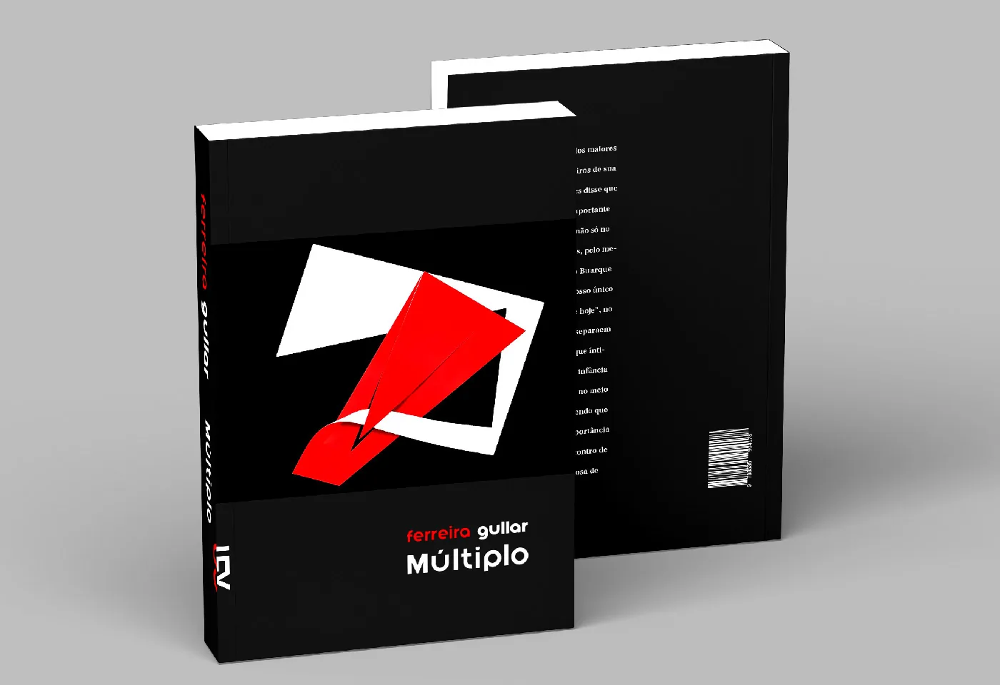
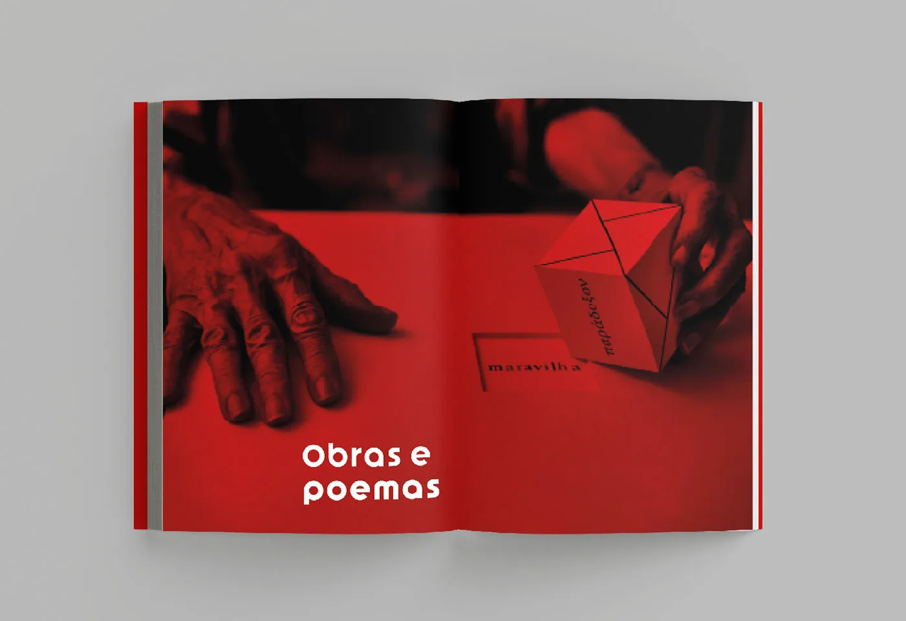
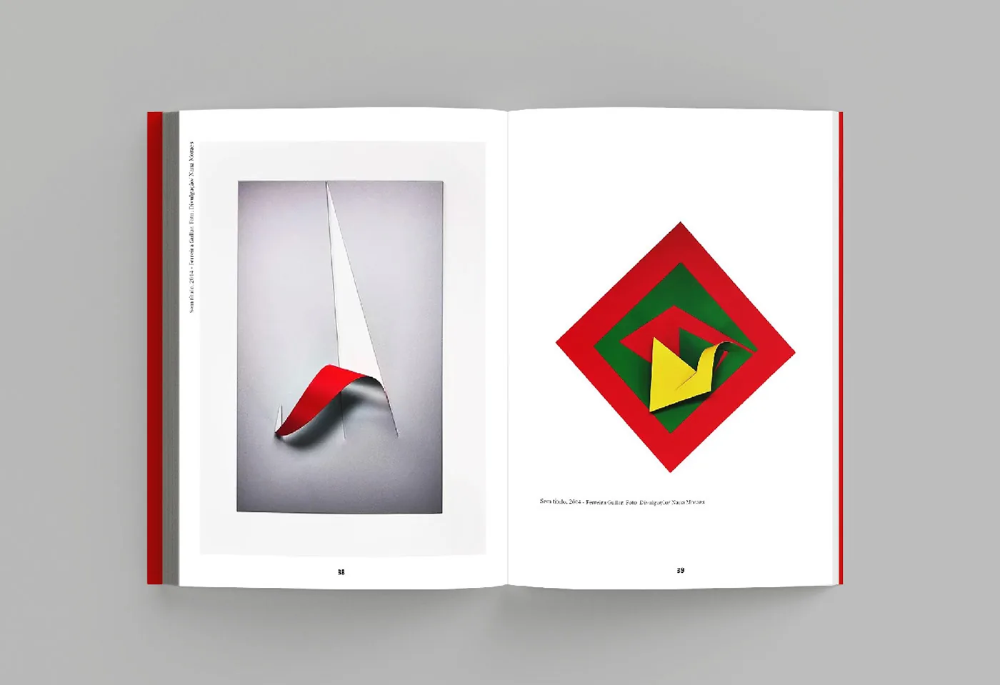
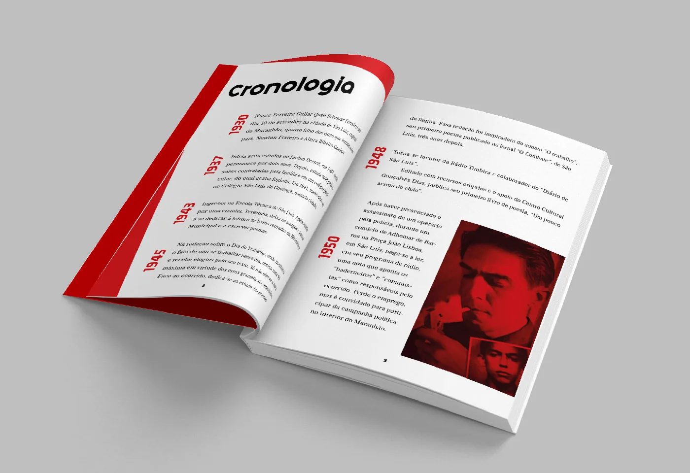
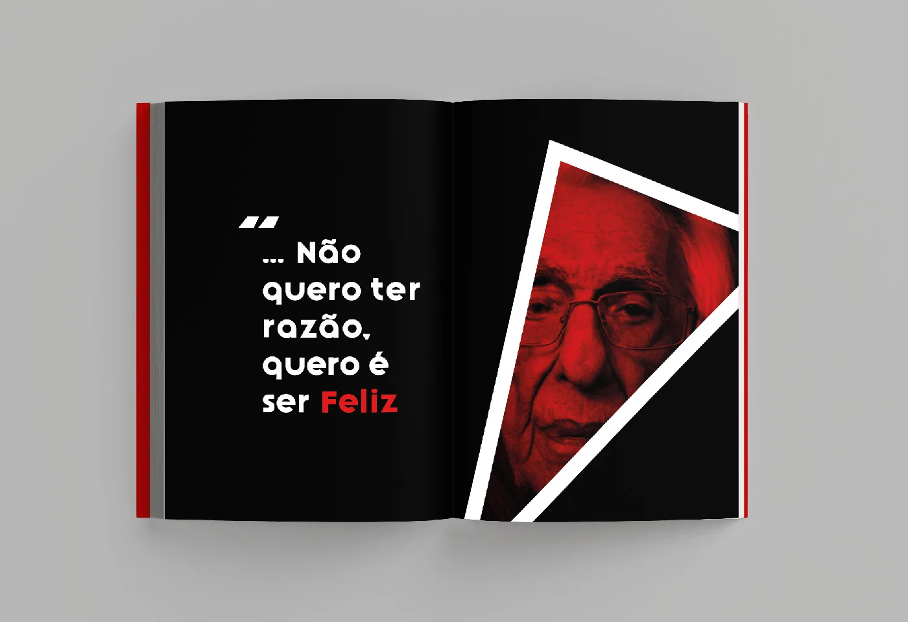
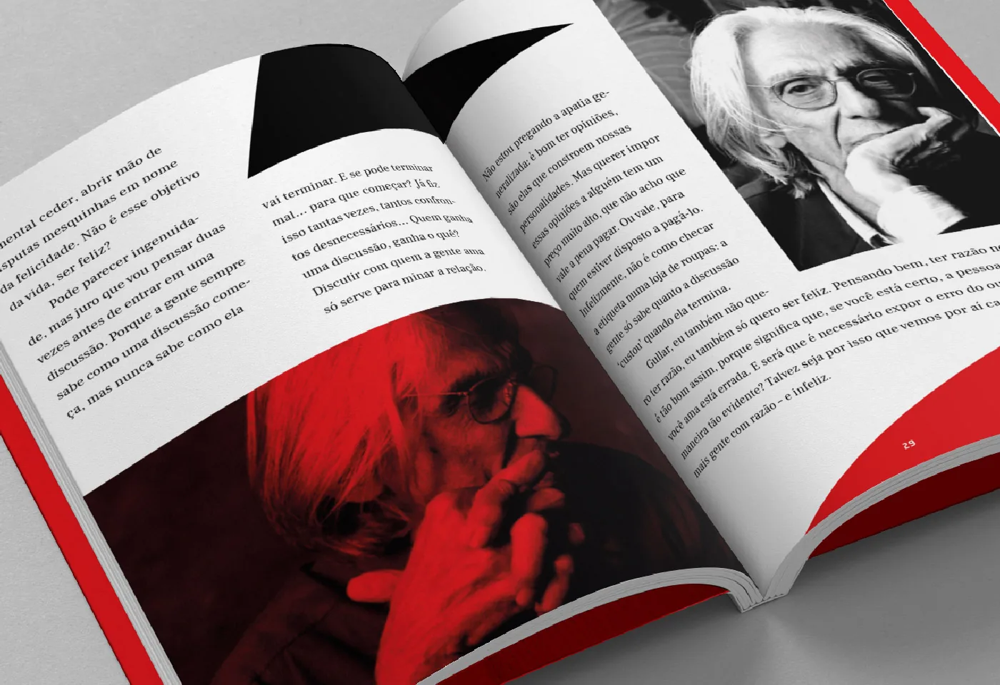
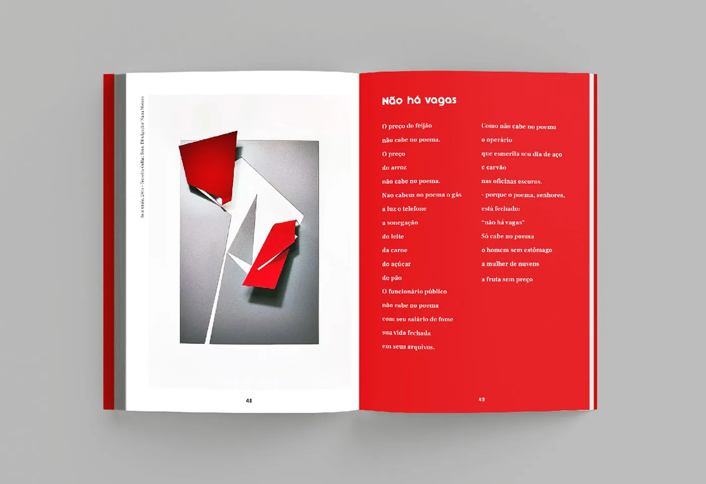
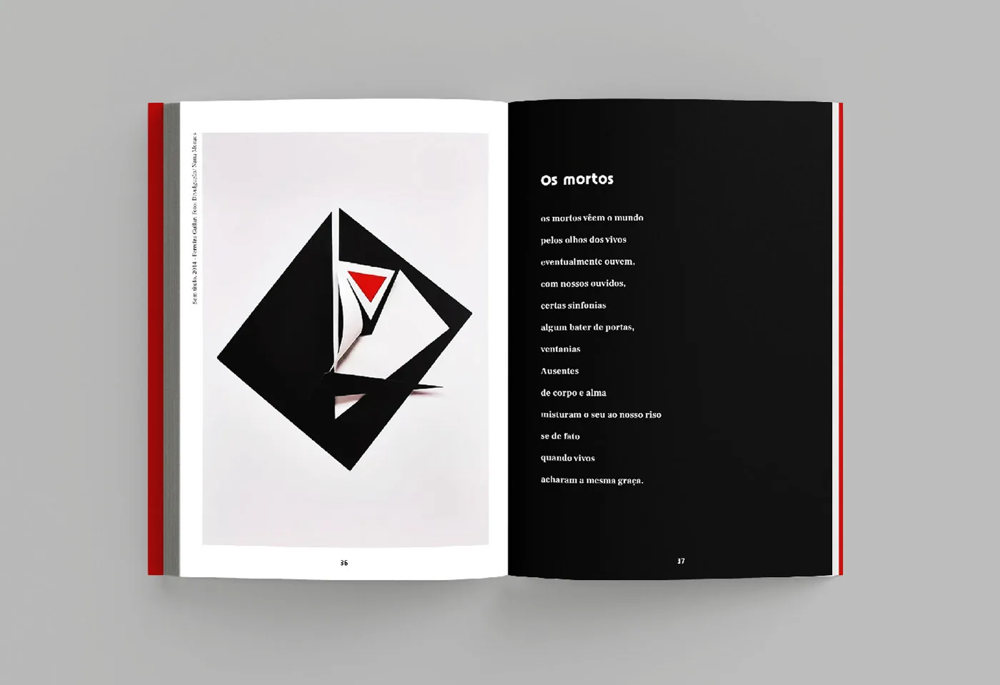

Editorial · 2021
Múltiplo
Livro sobre Ferreira Gullar que reúne biografia, cronologia, poemas e obras em um só volume, com papel dobrado como imagem-conceito.
- Cliente
- Disciplina Projeto Editorial, UFRJ
- Ano
- 2021
- Área
- Editorial
- Tipo
- Acadêmico
Contexto
Livro sobre Ferreira Gullar que reúne biografia, cronologia, poemas e obras em um só volume. O projeto precisava organizar quatro tipos de conteúdo com pesos diferentes sem transformar o livro em quatro livros.
Papel
Projeto gráfico completo: conceito, capa, grid, tipografia, tratamento de imagem e diagramação do miolo.
Conceito
O título vira método. Papel dobrado, fotografado em vermelho, branco, amarelo e preto, abre cada seção. As dobras mudam de forma a cada página e sustentam a ideia de um autor que é várias coisas ao mesmo tempo.
Sistema visual
- Paleta reduzida a vermelho, preto e branco, com amarelo só nas dobraduras.
- Corte vermelho nas laterais do bloco de texto, que identifica o livro fechado.
- Cronologia com os anos em vermelho, correndo na margem externa.
- Páginas pretas para os poemas, brancas para o ensaio e vermelhas para as aberturas de seção.
- Retratos em preto e branco alternados com duotone vermelho.








Aplicações
Capa e quarta capa, lombada, cronologia, seção “Obras e poemas”, os poemas “Não há vagas”, “Êxito” e “Os mortos”, e aberturas em duotone.
Créditos
Rafaela Senceite.